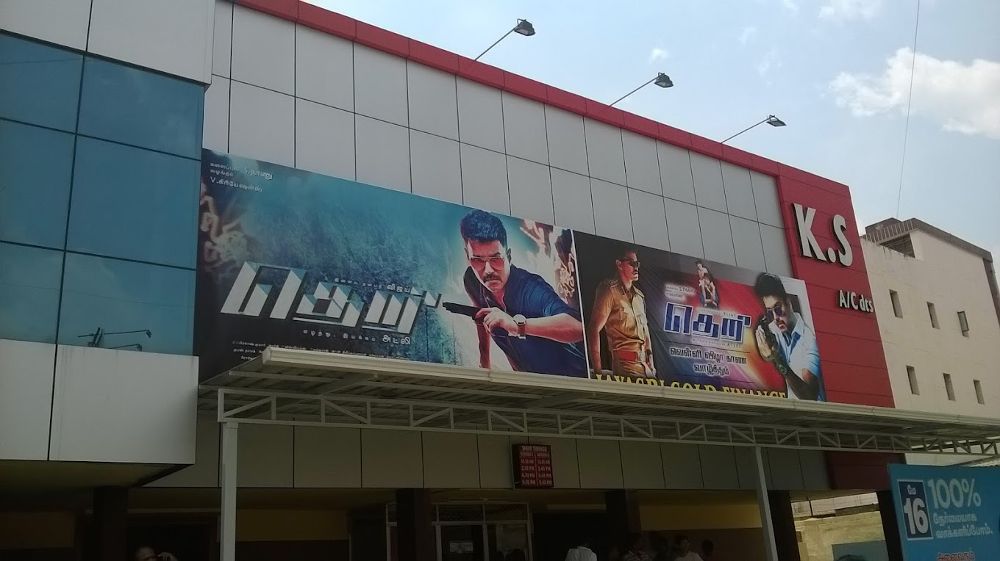

NAMAKKAL
NAMAKKAL KS CINEPLEX

A cineplex is a multiplex, a movie theatre with several screens, coming from the words cinema and complex.
Theatre or theater is a collaborative form of performing art that uses live performers, usually actors or actresses, to present experiences of a real or imagined event before a live audience in a specific place, often a stage.
Modern Western theatre comes, in large measure, from the theatre of ancient Greece, from which it borrows technical terminology, classification into genres, and many of its themes, stock characters, and plot elements
A theatre company is an organisation that produces theatrical performances, as distinct from a theatre troupe (or acting company), which is a group of theatrical performers working together.